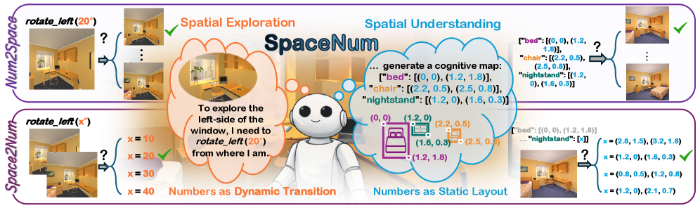
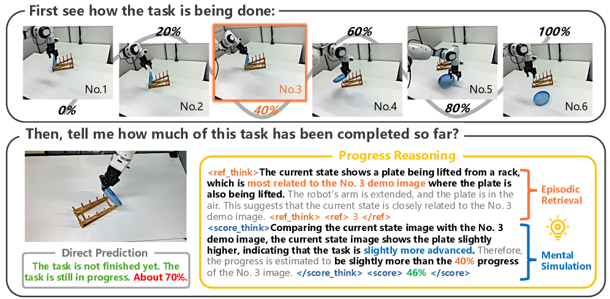
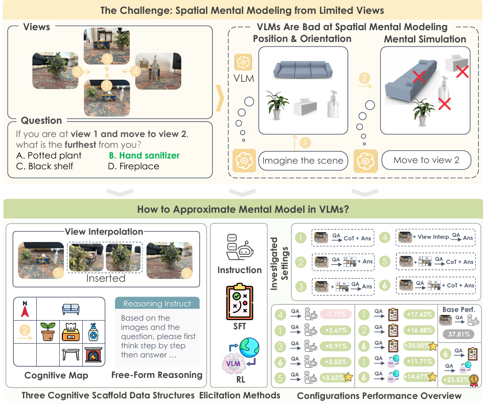
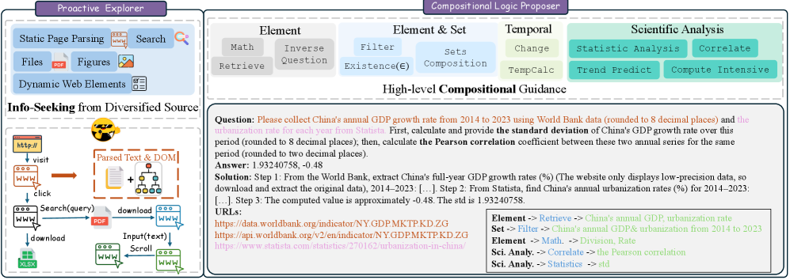
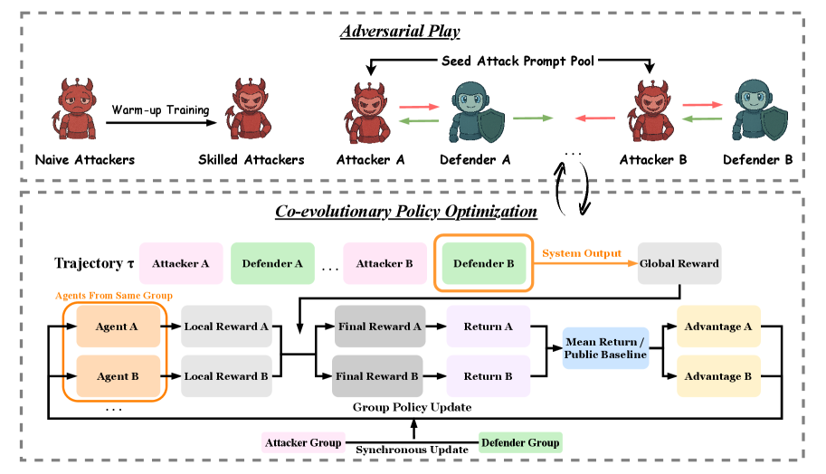
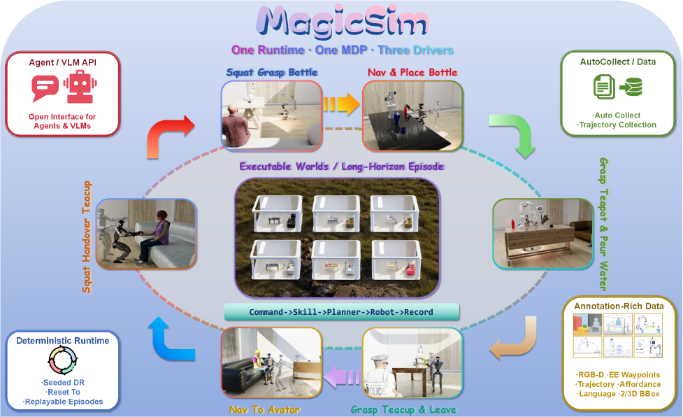
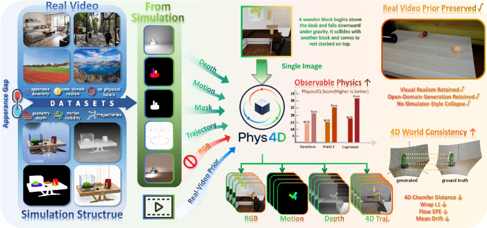
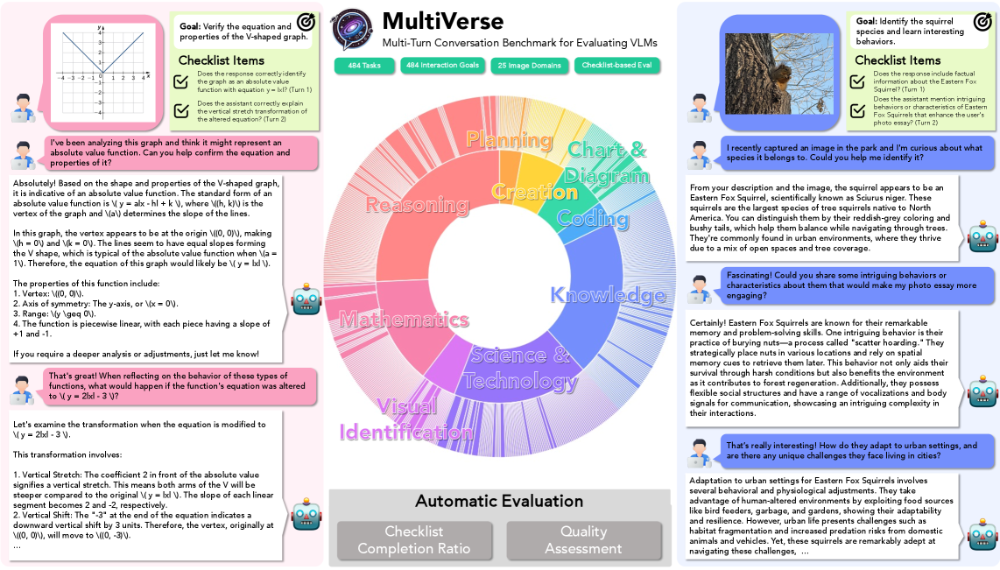
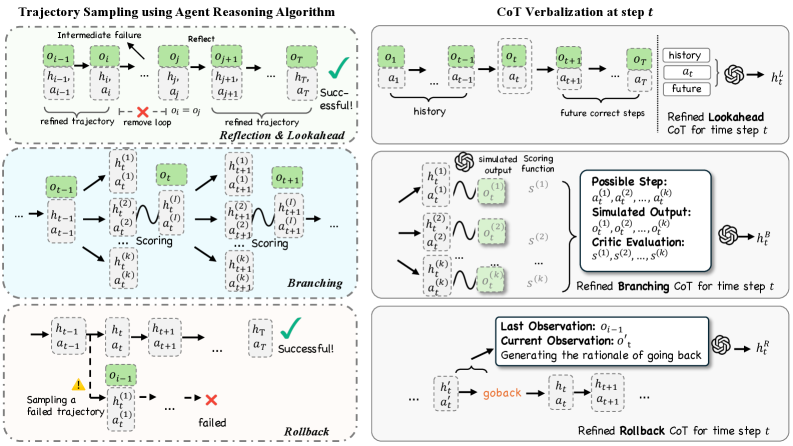
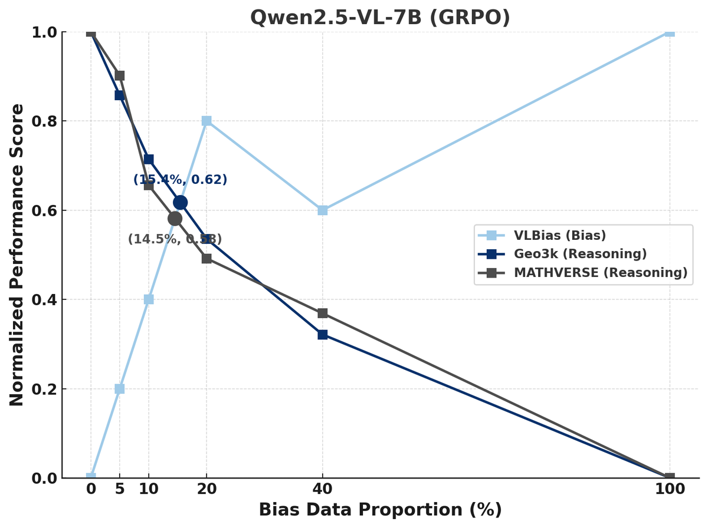

About Me
Hi! I’m Jianshu Zhang (张鉴殊), a first-year CS Ph.D. student at Northwestern University. My research focuses on building multimodal and agentic AI systems that are truly ready to understand, reason about, and act in the interactive and physical world. Feel free to reach out if you’d like to chat.
Research Interests
How can large vision-language models truly step into our world?
- Safe and diverse behavior: before VLMs act in open environments, they need to remain safe, reliable, and robust across diverse users, contexts, and failure modes.
- Clear visual perception: VLMs must see the world precisely, preserving fine-grained perception and visual grounding instead of relying mainly on language priors.
- Spatial and physical intelligence: beyond recognizing images, VLMs should build spatial mental models, reason about unseen or interactive environments, and connect perception to physical action.
News
- [Jul 2026] I received the Outstanding Reviewer Award at ACL 2026.
- [May 2026] SpaceNum was released, revisiting spatial-numerical understanding in VLMs.
- [May 2026] ProgressLM was selected as Oral in ACL 2026.
- [May 2026] I was selected as a Silver Reviewer in ICML 2026.
- [Apr 2026] AdvEvo-MARL was accepted to ICML 2026.
- [Apr 2026] ProgressLM and COREWeaver were accepted to ACL 2026 (Main).
Show more
- [Jan 2026] MindCube was accepted to ICLR 2026.
- [Jan 2026] ProgressLM was released, probing how well VLMs reason in progress.
- [Sep 2025] Honored to receive McCormick School of Engineering Fellowship from Northwestern University.
- [Sep 2025] Joined Northwestern University as a Ph.D. student in Computer Science.
- [Aug 2025] Evo-MARL and FairReason were accepted to T2FM@ICCV 2025.
- [Aug 2025] WebCoT was accepted to EMNLP 2025 (Findings) and AIA@COLM 2025.
- [Jun 2025] MultiVerse was accepted to ICCV 2025.
- [Jun 2025] Graduated with a B.E. degree and selected as Outstanding Undergraduate.
- [May 2025] VLM2-Bench was accepted to ACL 2025 (Main), and Bridge-Coder to ACL 2025 (Findings).
- [May 2025] Honored with the Lei Jun Computer Breakthrough Award (50K RMB).
- [May 2025] CAN was accepted to ICML 2025.
- [Jan 2025] PVIT was accepted to ICLR 2025.
- [Nov 2024] PVIT-3M dataset ranked Top 3 in downloads on Hugging Face.
- [Oct 2024] Awarded the National Scholarship (top 0.2% nationally).
- [Sep 2024] Image Textualization accepted to NeurIPS 2024 (D&B).
- [Sep 2024] MLLM-Protector and FIRST accepted to EMNLP 2024 (Main).
- [Mar 2024] CORE accepted to CogSci 2024 (Oral).
- [Dec 2023] FuzzLLM accepted to ICASSP 2024.
Publications
2026
-

New -

ACLACL 2026 (Main, Oral); ICLR 2026 Workshop on World Models -

ICLR -

ACL -

ICML -

arXivarXiv preprint arXiv:2606.17511 -

arXivarXiv preprint arXiv:2603.03485
2025
-

ICCVICCV 2025; ICCV 2025 Workshop KnowledgeMR -
 ICLR
ICLR
-

EMNLPEMNLP 2025 (Findings); COLM 2025 Workshop AIA -

arXiv
 ACL
ACL
 ICML
ICML
 ACL
ACL
2024
-
 EMNLP
EMNLP
-
 ICASSP
ICASSP 2024; Presented at ShmooCon 2024
ICASSP
ICASSP 2024; Presented at ShmooCon 2024 -
 EMNLP
EMNLP
-
 CogSci
CogSci
 NeurIPS
NeurIPS
Awards
- McCormick School of Engineering Fellowship (~46K USD)
- National Scholarship
- Lei Jun Computer Breakthrough Award (50K RMB)
- Outstanding Undergraduate
- First-Class Scholarship (ranked 1st)
- Merit Student
Education
- Northwestern University, Ph.D. in Computer Science (2025-2030)
- Wuhan University (2021-2025)
- Shenzhen Middle School (2018-2021)